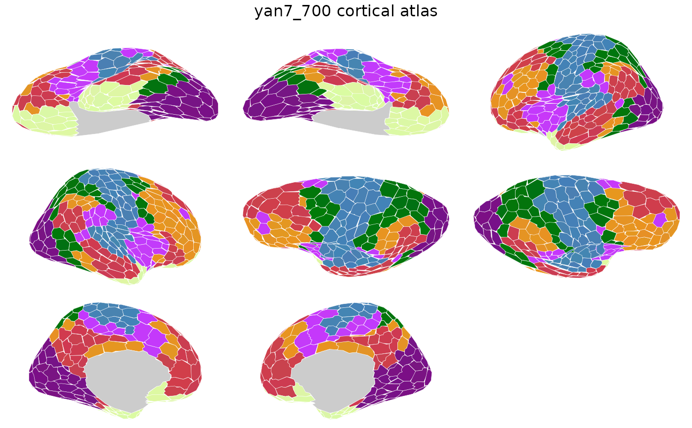

Brain atlas for the Yan et al. (2023) homotopic cortical parcellation
with 700 parcels aligned to 7 resting-state networks (Yeo et al., 2011).
Contains both 2D polygon geometry for ggseg::geom_brain() and
3D vertex indices for ggseg3d::ggseg3d().
Value
A ggseg.formats::ggseg_atlas object (cortical).
References
Yan X, et al. (2023). "Homotopic local-global parcellation of the human cerebral cortex from resting-state functional connectivity." NeuroImage, 273:120010. doi:10.1016/j.neuroimage.2023.120010
See also
Other ggseg_atlases:
yan17_100(),
yan17_1000(),
yan17_200(),
yan17_300(),
yan17_400(),
yan17_500(),
yan17_600(),
yan17_700(),
yan17_800(),
yan17_900(),
yan7_100(),
yan7_1000(),
yan7_200(),
yan7_300(),
yan7_400(),
yan7_500(),
yan7_600(),
yan7_800(),
yan7_900()
Other cortical_atlases:
yan17_100(),
yan17_1000(),
yan17_200(),
yan17_300(),
yan17_400(),
yan17_500(),
yan17_600(),
yan17_700(),
yan17_800(),
yan17_900(),
yan7_100(),
yan7_1000(),
yan7_200(),
yan7_300(),
yan7_400(),
yan7_500(),
yan7_600(),
yan7_800(),
yan7_900()
Examples
yan7_700()
#>
#> ── yan7_700 ggseg atlas ────────────────────────────────────────────────────────
#> Type: cortical
#> Regions: 700
#> Hemispheres: left, right
#> Views: inferior, lateral, superior, medial
#> Palette: ✔
#> Rendering: ✔ ggseg
#> ✔ ggseg3d (vertices)
#> ────────────────────────────────────────────────────────────────────────────────
#> hemi region label
#> 1 left 7networks_LH_Default_ExStrSup lh_7networks_LH_Default_ExStrSup
#> 2 left 7networks_LH_Default_FPole_1 lh_7networks_LH_Default_FPole_1
#> 3 left 7networks_LH_Default_FPole_2 lh_7networks_LH_Default_FPole_2
#> 4 left 7networks_LH_Default_FPole_3 lh_7networks_LH_Default_FPole_3
#> 5 left 7networks_LH_Default_FPole_4 lh_7networks_LH_Default_FPole_4
#> 6 left 7networks_LH_Default_FrMed lh_7networks_LH_Default_FrMed
#> 7 left 7networks_LH_Default_IPL_1 lh_7networks_LH_Default_IPL_1
#> 8 left 7networks_LH_Default_IPL_10 lh_7networks_LH_Default_IPL_10
#> 9 left 7networks_LH_Default_IPL_2 lh_7networks_LH_Default_IPL_2
#> 10 left 7networks_LH_Default_IPL_3 lh_7networks_LH_Default_IPL_3
#> ... with 690 more rows
plot(yan7_700())
